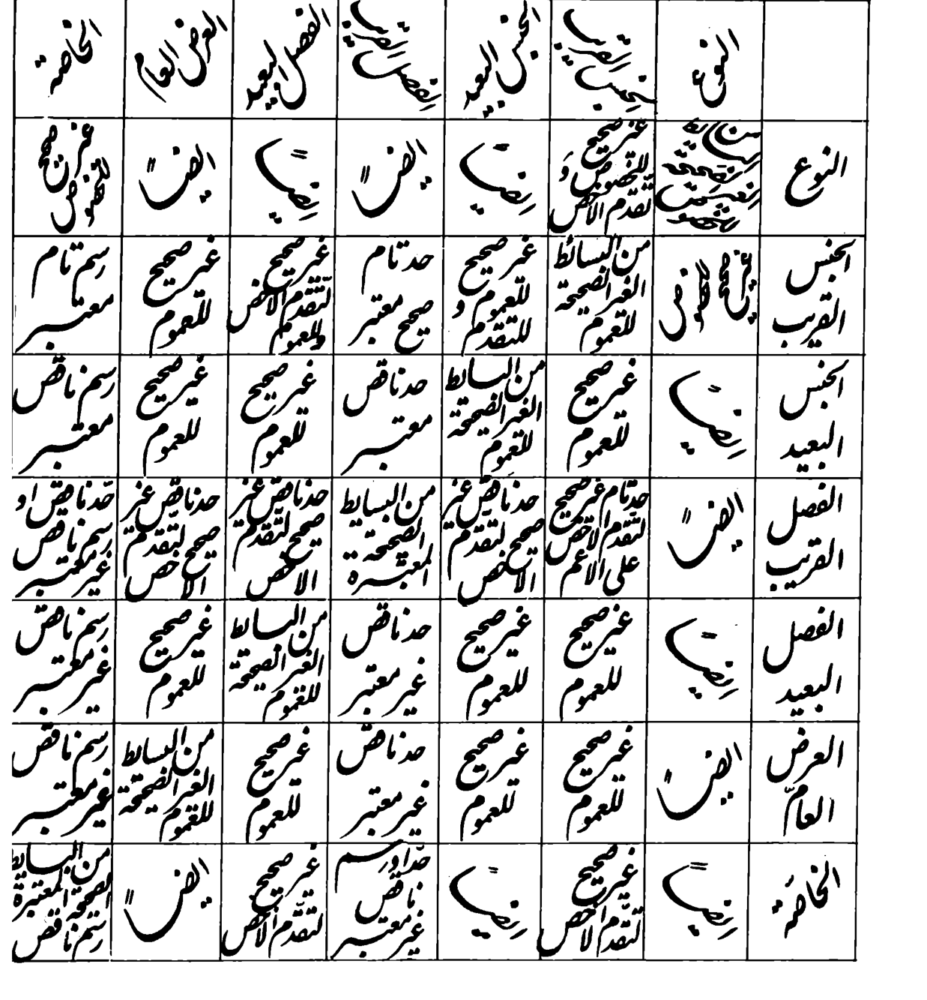
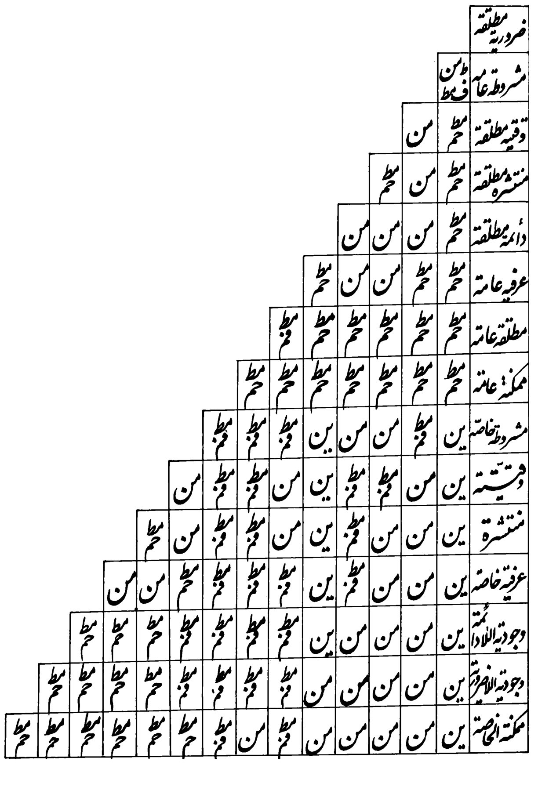

GNAMMA · TAHḎĪB AL-MANṬIQ · HISTORICAL H GLOSSES · SOURCE AUDIT
Stage 120 · Ordered definitions and directional modal relations
The manuscript-like historical source table expresses not just correctness but acceptable definition order, incompleteness, and cross-references. The modal table marks which entire proposition has broader conditions of truth.
Evidence policy: 39/49 Q258 cells have at least a selected photographed phrase (not 39 full translations). 27/105 Q294 positions have an individually read shorthand sign (not 27 modal theorem proofs). This reader presents 23 new bounded source readings only, leaving the historical continuous text untouched.
Q258 · Fifteen new printed definition fragments
Prior: 24 selected phrase loci. This stage: 15 further fragments, including four printed cross-reference instructions. All 49 source locations remain accessible in the previous complete research atlas.
| Ordered cell | Arabic (photographed) | Literal English | Scope |
|---|---|---|---|
| Loading source register… | |||

Q294 · Eight original directional signs
The source Q293 legend says مط is unrestricted inclusion; حم means the lower proposition is broader than the upper one. The comparison is of the obtaining of propositional contents في نفس الأمر, not simple predication of one concept over another.
| Compared pair | Historical sign | Reading | Evidence grade |
|---|---|---|---|
| Loading source register… | |||

Full source notes and remaining tasks · Q258 source JSON · Q294 source JSON